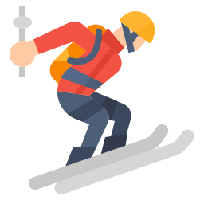

Škola skijanja Kopaonik Darko Pantić - Instruktor skijanja



Sandi Murovec slovenački skijaš, demonstrator je koji je osmislio UPS koncept, ili nastavni sistem postepenog produžavanja skija (Učenje sa Produžavanjem Skija- UPS). Počinje se na skijama dužine 90 cm, prelazeći na skije dužine 125cm, i završavajući na skijama dužine koju vi koristite.
Pitaćete zašto?
Savremena kombinacija tzv. zarezne ili rotacione tehnike zahtijeva nove načine učenja, brže, direktnije i efikasnije sisteme koji bi privukli više ljubitelja bijelih staza i omogućili Vam da iskoristite prednosti koje Vam nove skije pružaju. Zbog toga su one i napravljene!

Od 2005. godine UPS koncept je posao dio skijaškog nastavnog programa u mnogim ski školama i ski centrima širom svijeta. Uključujući SAD, Rusiju, Kinu, Švajcarsku...itd
Normalno je da se pitate da li je UPS za mene?
UPS je za sve one koji žele da brzo, jednostavno i bezbjedno nauče skijate ili da izvrše korekciju svoje dosadašnje tehnike skijanja.
Za sve one koji nemaju vremena da prolaze sve faze i stepenice klasične obuke.
Koji žele izazov, imaju dobar kondicioni i motorički status. Koji se ne plaše izazova.
Do sada je UPS koncept impresionirao hiljade ski fanova i ne vidim razloga zašto ne bi i Vas?
UPS metod uvodi različite metode učenja bez teškoće i napora, igru i zabavu- sve u želji da se otkrije nepoznato svakom pojedincu u što kraćem vremenskom roku. Kratke UPS skije su izuzetno pogodne za učenje bez prethodnog vježbanja i za usavršavanje i korekciju dosadašnje tehnike.
Kratke skijice od 90 cm nam stalno daju povratnu informaciju jer, plešu i trepere, kad god nisu pravilno postavljene na rubnike ili nisu urađeni mekani pokreti. Samim time nam olakšavaju i ubrzavaju detekciju greške, učenje i usavršavanje tehnike skijanja.
One primoravaju skijaša da postigne:
1. Otvoren skijaški stav- pruža skijašu mogućnost da ima bolji oslonac i stabilnost. Takav skijaški stav je karakterističan u oba slučaja- i za prve korake na snegu i za vrhunske skijaške tehnike.
2. Uravnotežen i centriran položaj tijela sa ski cipelama na sredini skija, omogućava najbolji skijaški učinak.
3. Vodjenje skija na rubnicima obe skije (zarezna tehnika) za pojedinačna dostignuća skijaša u zavisnosti od njegovog/ njenog znanja, vještine, složenosti staze i opreme (radijus skija).
4. Tijelo prati i održava osu ramena u položaju koji prati pravac skijanja (ili težište skijaša) u svim fazama zaokreta. Pri većim brzinama štap je samo naznačen. Više se ne zahtjeva vertikalno opružanje.
5. Čak i pri manjim brzinama štap je suvišan. Ako ima potrebe za njim, do toga dolazimo na kraju pripreme za zaokret.
6. Brzi pokret koljena i skočnog zgloba (obaranje stopala) u pravcu novog zaokreta.
7. Veće naginjanje tokom zaokreta.
8. Niže težište. Manje vertikalnog, a više lateralnog (bočnog) gibanja.
9. Povijena kičma u "mačka poziciju" za bolju kontrolu skija i bolje iskorištenje refleksa.
10. Neprekidni skije - snijeg kontakt